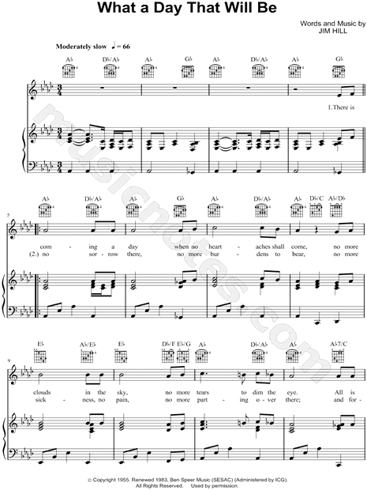

|
¡@ |
¡@ |
|
¡@YRICS: |
¡@ |
|
¡@ 
|
|
|
¡@ |
¡@ |

|
¡@ |
¡@ |
|
¡@YRICS: |
¡@ |
|
¡@ 
|
|
|
¡@ |
¡@ |

¡@
| Text: | What a Day That Will Be |
| Author: | Jim Hill |
| Tune: | WHAT A DAY |
| Composer: | Jim Hill |
| First Line: | There is coming a day when no heartaches shall come |
| Title: | What a Day That Will Be |
| Author: | Jim Hill |
| Refrain First Line: | What a day that will be when my Jesus I shall see |
| Meter: | Irregular |
| Language: | English |
| Publication Date: | 2008 |
| Topic: | Comfort,Encouragement, Hope; Eternal Life, Heaven |
| Copyright: | © Copyright 1955. Renewed 1983 Ben Speer Music (admin. by ICG). All rights res |
| Short Name: | Jim Hill |
| Full Name: | Hill, Jim |
| Birth Year: | 1930 |
The Story
Jim Hill could not understand why a good woman like his mother-in-law had to
get seriously ill. A newbie to Christianity, he just could not shake off that
thought in his mind. Then as if to clear his confusion, God answered him as he
was driving. The words in Revelations 21:4 popped up in his consciousness. The
statement paints a beautiful picture that made Hill exclaimed, ¡§What a day that
will be!¡¨
Excitedly, he immediately looked for something to write on once he reached home.
He found a piece of cardboard and there he wrote the rest of the lyrics for
¡§What a Day That Will Be.¡¨
Listen to the following men¡¦s rendition with a testimony at the beginning of the
clip.
The Gospel Plowboys in ¡§What a Day That Will Be¡¨
https://youtu.be/G66ThRLy9js
The Hymn
Jim Hill wrote ¡§What a Day That Will Be¡¨ in 1955. The Golden Keys Quartet first
presented it in public. Though it became one of their most requested songs to
perform, it did not cause much stir until the 1970¡¦s. By 2000, it has become
popular among churches and itinerant gospel singers. Today, it¡¦s considered a
gospel standard fit for any occasion.
The first to hear Hill¡¦s song was none other than the woman who inspired it. His
mother-in-law¡¦s face brightened after hearing the tune. Whatever came after her
hospitalization, she and her family must have been at peace.
The Songwriter
An Anthem for Encouragement: ¡§What a Day That Will Be¡¨ 1
A former salesman of shoes, he felt the call to do music ministry.
He was the first tenor and lead singer for the New Stamps Quartet in the 1960¡¦s.
Their recording of Hill¡¦s song, ¡§What a Day That Will Be¡¨ became the highest
selling album in the gospel community. He then moved to the Statesmen Quartet
and made huge breaks, as well. In 2012, he won the Southern Gospel Music Award.
In his late years, he became part of Bill Gaither¡¦s Homecoming. His singing and
songwriting career spanned for decades until January 2018.
https://www.countrythangdaily.com/day-jim-hill/

¡@
¡@